طريقة استخدام «وين فلوسي»
شرح خطوة بخطوة بالصور، من أول فتح للتطبيق إلى التقارير والنسخة الاحتياطية.
1البداية: اللغة والبلد
- أول ما تفتح التطبيق تظهر نافذة «أهلاً بك».
- اختر اللغة (10 لغات) وبلدك؛ البلد يضبط العملة ونسبة الضريبة تلقائياً.
- حدد ماذا تريد تتابع (مصروف البيت، الإيجار والفواتير، الجمعية، الديون…) ثم اضغط ابدأ.
💡 تقدر تغيّر كل هذا لاحقاً من الإعدادات.
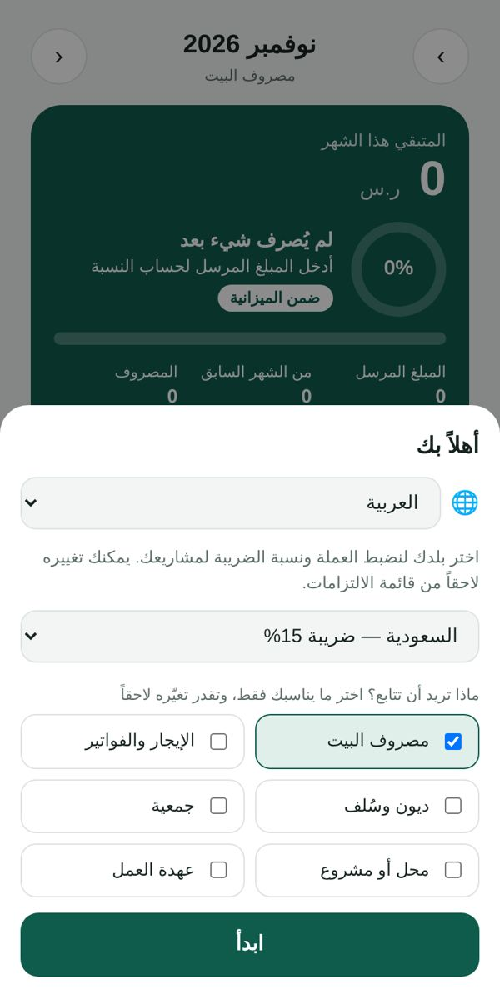
2اكتب المبلغ اللي وصلك هذا الشهر
- اضغط إدخال المبلغ في البطاقة الخضراء.
- اكتب المبلغ المرسَل أو الراتب لهذا الشهر واضغط حفظ.
- المتبقي من الشهر الماضي يُضاف تلقائياً.
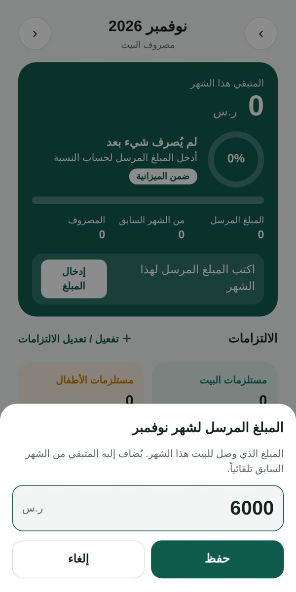
3سجّل المصروف بضغطة
- اكتب المبلغ.
- اختر الالتزام: البيت، الأطفال، الزوجة…
- اكتب وصفاً قصيراً (اختياري) واضغط إضافة.
💡 أخطأت؟ اضغط على المصروف لتعديله، أو على × لحذفه (ويظهر زر «تراجع» لثوانٍ).
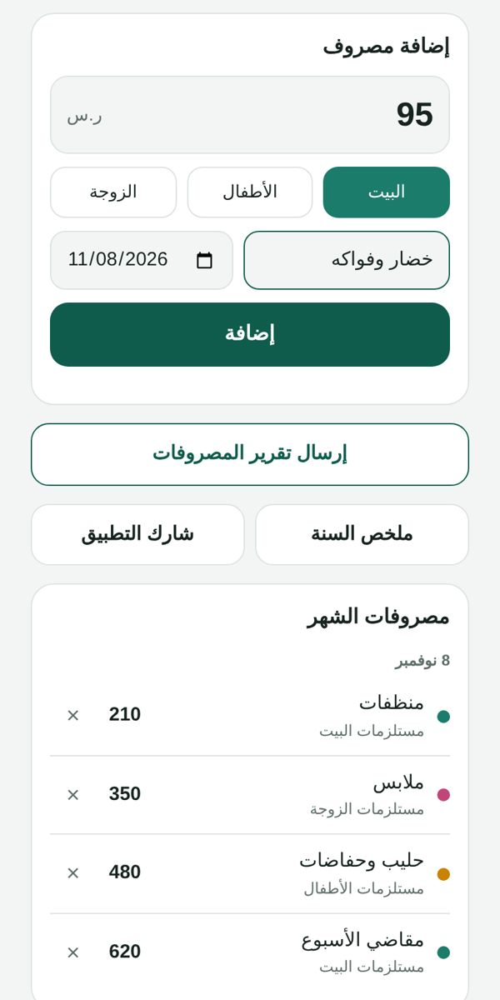
4الشاشة الرئيسية: كم باقي معك؟
- المتبقي هذا الشهر بخط كبير.
- الدائرة توضح نسبة ما صرفته، والشريط الملوّن يقسّمه على الالتزامات.
- كل التزام له بطاقة تعرض ما صُرف عليه.
- انتقل بين الأشهر بالأسهم أعلى الشاشة.
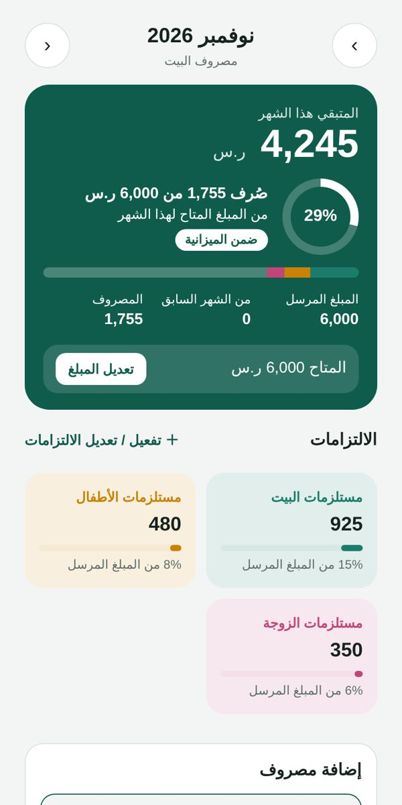
5فعّل التزاماتك وحدد ميزانية لكل واحد
- اضغط ＋ تفعيل / تعديل الالتزامات.
- شغّل ما يخص بيتك: الزوج، السيارة، الأرض، الدخل…
- اكتب ميزانية شهرية لأي التزام ليظهر مؤشر يقارن الصرف بها.
- أضف التزاماً خاصاً باسمك، أو مشروعاً (تاكسي، مزرعة، محل…).
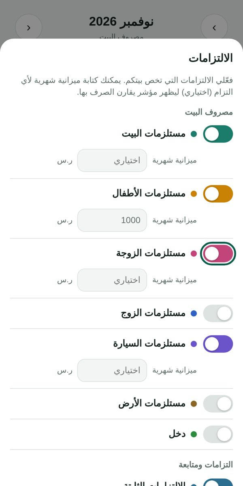
6الإيجار والفواتير والأقساط
- فعّل «الالتزامات الثابتة» ثم اضغط ＋ إضافة.
- اكتب الاسم والمبلغ ويوم الاستحقاق، وفعّل التذكير الساعة 9 صباحاً.
- عند الدفع اضغط تم الدفع، والمتأخر يظهر باللون الأحمر.
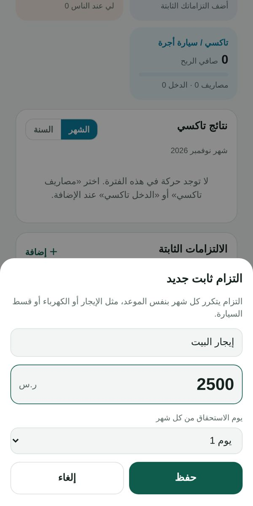
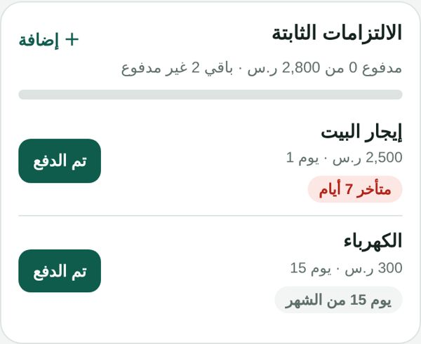
7الديون والسُّلف
- اضغط ＋ دين جديد واختر: دين عليّ، أو سلفة لي عند غيري.
- سجّل كل دفعة بزر سدّدت دفعة أو استلمت دفعة.
- أرسل تذكيراً لطيفاً جاهزاً على واتساب.
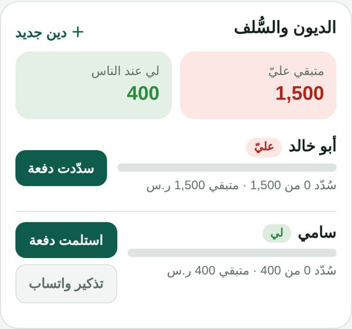
8الجمعية
- اضغط ＋ جمعية جديدة: الاسم، القسط، شهر البداية، والأعضاء بترتيب القبض.
- التطبيق يوضح مين يقبض هذا الشهر ومتى دورك.
- علّم مين دفع، وشارك الجدول أو ذكّر الأعضاء على واتساب.
💡 التطبيق ينظّم ويذكّر فقط، ولا يحوّل أي أموال.
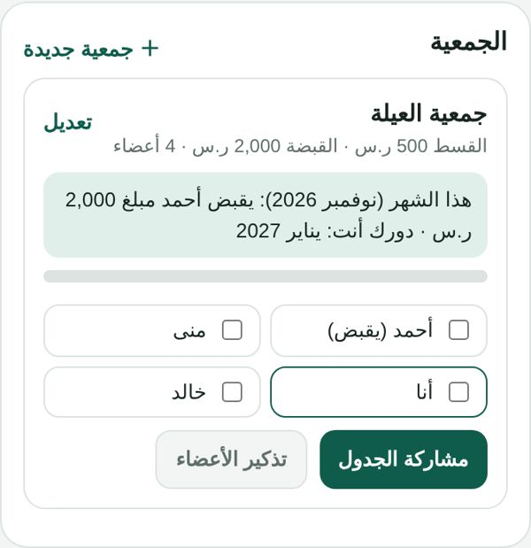
9أهداف الادخار
- اضغط ＋ هدف جديد: عمرة، زواج، جهاز، صندوق طوارئ…
- اكتب المبلغ المطلوب والتاريخ، والتطبيق يقول لك كم تدّخر كل شهر.
- كلما ادّخرت اضغط أضف للادخار وتابع تقدّمك.
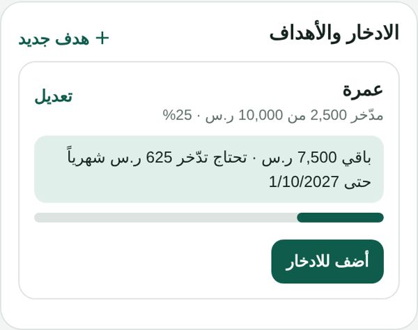
10سواق تاكسي أو توك توك؟ اعرف ربحك
- من الإعدادات أضف مشروع تاكسي / سيارة أجرة (أو توك توك، نقل، مزرعة، محل…).
- سجّل الدخل والمصاريف (بنزين، صيانة…) من نفس شاشة الإضافة.
- يظهر لك صافي الربح وهامشه، يومياً وشهرياً وسنوياً.
💡 خاصية النقل والعمل مجانية.
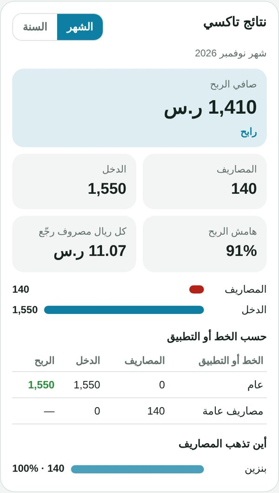
11تقرير الشهر على واتساب أو Excel
- اضغط إرسال تقرير المصروفات.
- يظهر تقرير منظم: المبلغ المرسل، الصرف، المتبقي، وتفاصيل كل التزام.
- أرسله على واتساب، أو انسخه، أو نزّله ملف Excel.
💡 وفيه «ملخص السنة» لمقارنة الأشهر.
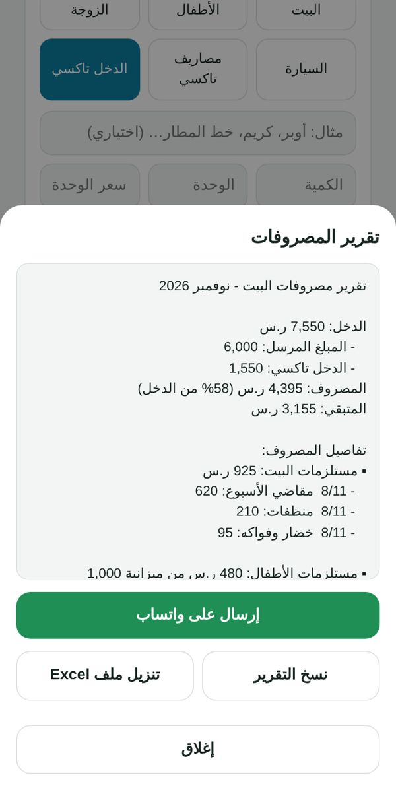
12المظهر الداكن واللغة
- زر 🌙 / ☀️ أعلى الشاشة يبدّل بين الفاتح والداكن.
- ومن الإعدادات: تلقائي (حسب الجوال) أو فاتح أو داكن.
- وتقدر تغيّر اللغة والبلد من نفس المكان.
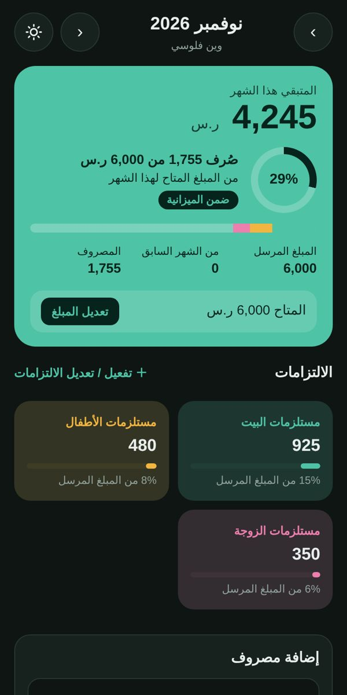
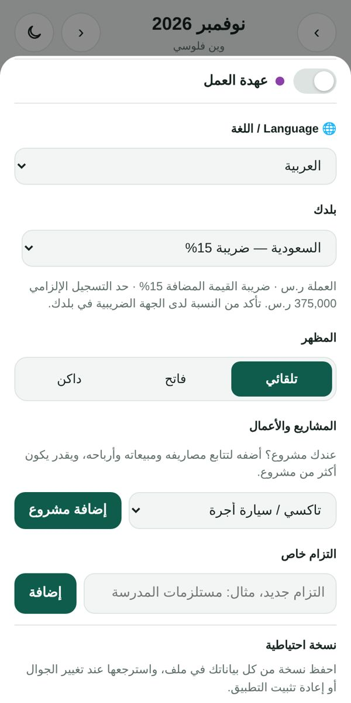
13احمِ بياناتك: النسخة الاحتياطية
- بياناتك تُحفظ تلقائياً على جوالك فقط، بدون حساب ولا إنترنت.
- من الإعدادات اضغط حفظ نسخة واحفظ الملف في Google Drive أو أرسله لنفسك.
- عند تغيير الجوال اضغط استرجاع نسخة واختر الملف.
- التطبيق يذكّرك تلقائياً إذا مر شهر بدون نسخة.
💡 رقم نسخة التطبيق يظهر أسفل هذا القسم.
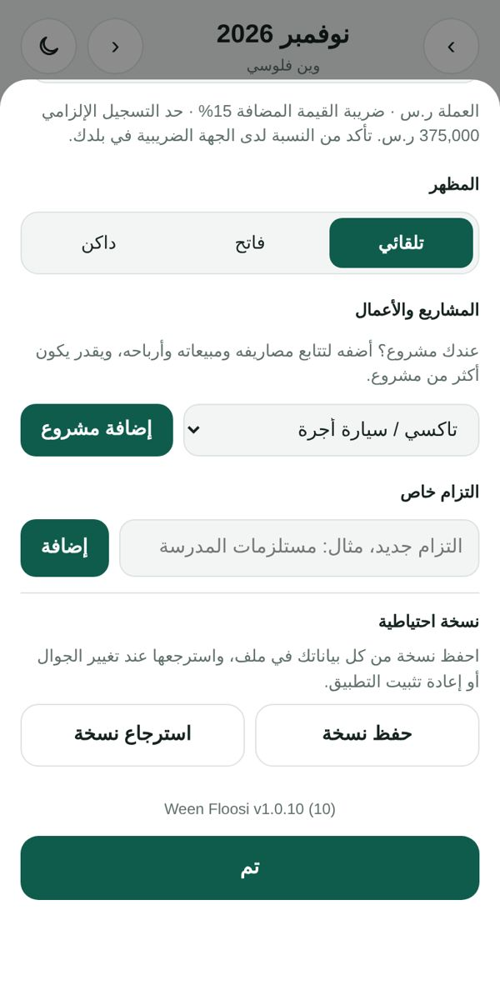
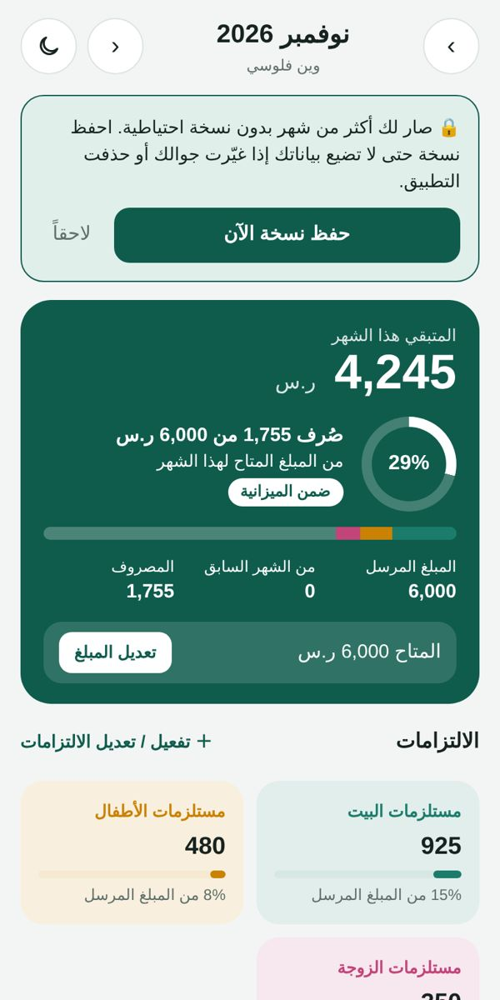
أسئلة سريعة
هل التطبيق مجاني؟
نعم، ميزانية البيت الأساسية مجانية دائماً. باقة «بلس» تزيل الإعلانات وتفتح كل المزايا، وباقة «أعمال» لأصحاب المحلات والمشاريع. وتقدر تفتح مزايا بلس مجاناً 24 ساعة بمشاهدة إعلان قصير.
هل أحد يشوف بياناتي؟
لا. ما فيه حساب ولا تسجيل دخول، وكل بياناتك محفوظة على جوالك فقط.
غيّرت جوالي، كيف أرجّع بياناتي؟
احفظ نسخة احتياطية من الجوال القديم (الإعدادات ← حفظ نسخة)، ثم في الجوال الجديد اضغط «استرجاع نسخة» واختر الملف.
كيف أرجع لشهر سابق؟
استخدم الأسهم بجانب اسم الشهر أعلى الشاشة.
عندي سؤال أو اقتراح
راسلنا على support@weenfloosi.com.